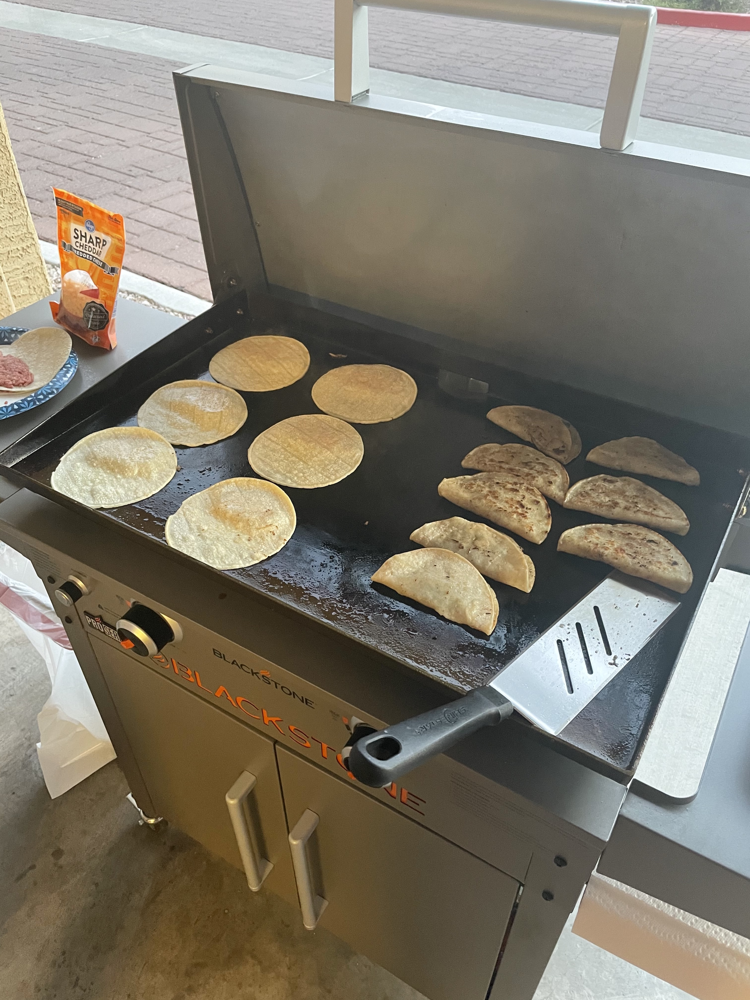

Freddie's Tacos

Description
Freddie's Tacos are a simple but classic dish made famous from Winslow, AZ.
Ingredients
- Ground Beef (93/7% preferred)
- Corn tortillas
- Mexican Blend Cheese
- Olive oil
- Garlic salt
- Pepper
Steps
- Prep the tacos by taking a small portion of ground beef and spreading it evenely on one side of a corn tortilla.
- Season the ground beef with garlic salt and fresh cracked pepper
- Heat the Blackstone to a medium-high heat. Spread an even layer of olive oil on the surface.
- Once heated, place the tortilla/ground beef with the meat side down for 3-4 minutes, or until browned.
- Flip the taco over and add cheese. Fold the taco while on the Blacktone
- Cook the tacos evenely on both sides (Approx 5-7 minutes per side, or until golden/crispy)